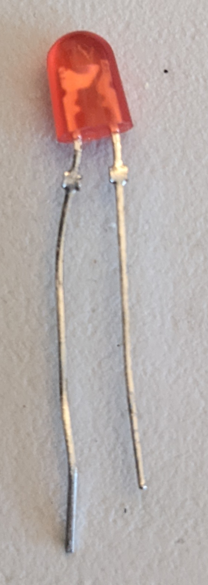
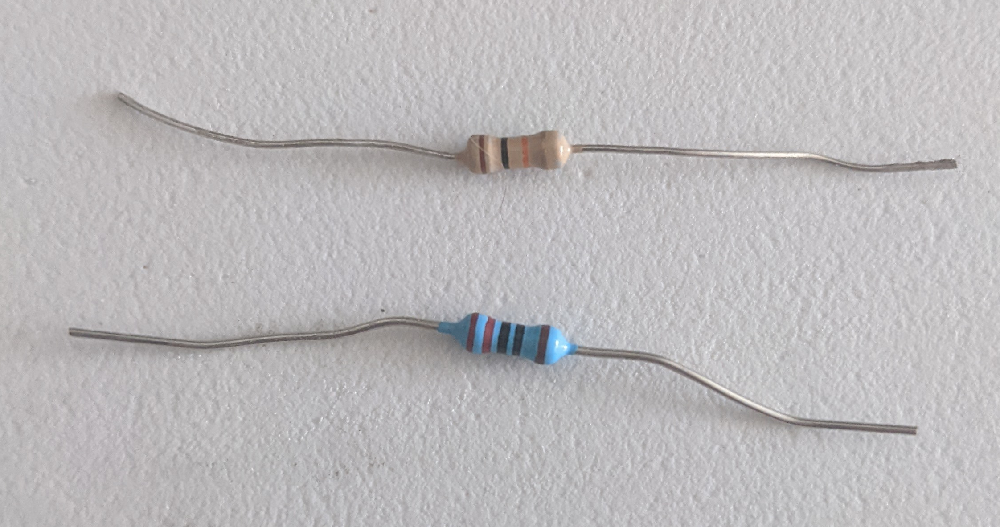
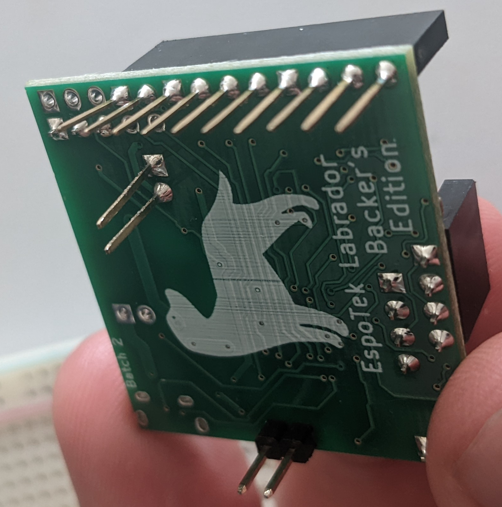
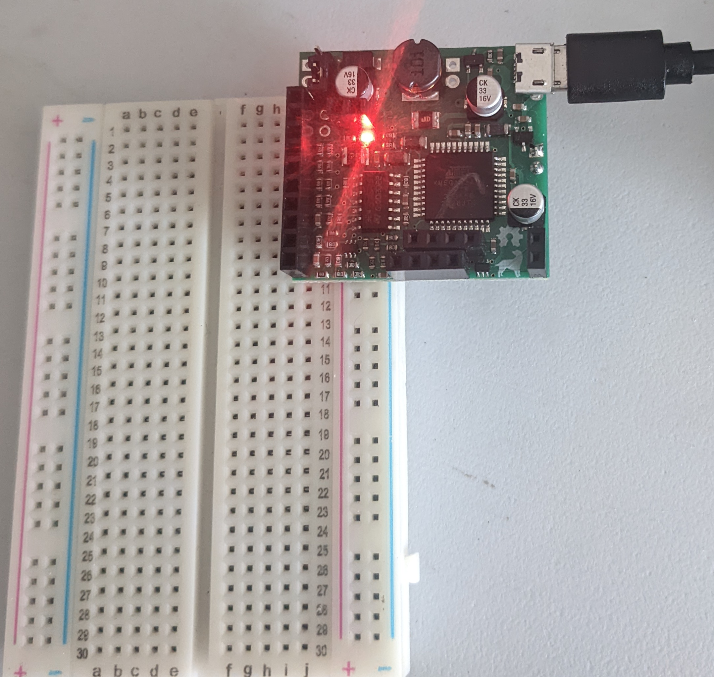

1.1 First circuit: LED’s
Contents
1.1 First circuit: LED’s¶
Electronics are made up of circuits which are just a bunch of electronics parts connected with wires.
Let’s build our first circuit: an LED circuit. This circuit has 4 components. Take out component kit 01 that includes:
Breadboard: Used for prototyping electronics circuits

LED: emits light when electricity flows through it
Resistors: limit the amount of electricity that can flow
Espotek Labador: We will use this as a source of power for the circuit
Lab¶
Step 1¶
Plug the Espotek Labador into the breadboard so that the 2 pins go into the red and blue rows:



Step 2¶
Plug in the USB cable from the Labador to your computer and you should see LED’s on the board turn on. 
Step 3¶
Insert one leg of the blue resistor into the red column of the breadboard. Insert the other leg of the resistor into any row:

Step 4¶
Insert the long leg of the LED into the same row as the resistor. The other LED leg goes to the blue column of the breadboard:

Congratulations on making your first circuit!
Step 5¶
Now let’s do a little experiment: take the LED out of the breadboard and flip it around. Notice what happens…
See result

LED’s are part of a family of electronic parts called diodes which only allow electricity to flow in one direction. They will be very useful for various applications.
Step 6¶
Let’s try another experiemnt and replace the resistor. Reverse the LED so the circuit is correct. Replace the blue resistor in the breadboard with the new one. It doesn’t matter which wire leg goes where:

Notice how the brightness of the LED changes when we replace the resistor. That’s because the 2nd resistor is letting less electricity flow from the voltage source through the LED.
Summary¶
In this chapter we made an LED circuit and explored how the direction of the LED matters as well as the value of the resistor. Next chapter we will use the Espotek to further explore this circuit.
#led #voltage_supply #resistor #resistance #espotek_labador #breadboard #usb_cable #led_polarity